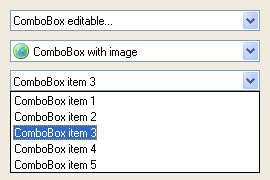

ComboBoxGadget()
语法
Result = ComboBoxGadget(#Gadget, x, y, Width, Height [, Flags])概要
Create a ComboBox gadget in the current GadgetList.
参数
#Gadget A number to identify the new gadget. #PB_Any can be used to auto-generate this number. x, y, Width, Height The position and dimensions of the new gadget. Note: on OS X, the height of a combobox can't be changed and this parameter will be ignored. Flags (optional) Flags to modify the gadget behavior. It can be composed (using the '|' operator) of one of the following constants: #PB_ComboBox_Editable : Makes the ComboBox editable #PB_ComboBox_LowerCase : All text entered in the ComboBox will be converted to lower case. #PB_ComboBox_UpperCase : All text entered in the ComboBox will be converted to upper case. #PB_ComboBox_Image : Enable support for images in items (not supported for editable ComboBox on OSX)
返回值
Returns nonzero on success and zero on failure. If #PB_Any was used as the #Gadget parameter then the return-value is the auto-generated gadget number on success.
备注
A 'mini help' can be added to this gadget using GadgetToolTip().
The following functions can be used to act on the list contents:
- AddGadgetItem(): Add an item.
- GetGadgetItemText(): Returns the gadget item text.
- CountGadgetItems(): Count the items in the current combobox.
- ClearGadgetItems(): Remove all the items.
- RemoveGadgetItem(): Remove an item.
- SetGadgetItemText(): Changes the gadget item text.
- SetGadgetItemImage(): Changes the gadget item image (need to be created with the #PB_ComboBox_Image flag).
- GetGadgetState(): Get the index (starting from 0) of the current element.
- GetGadgetText(): Get the (text) content of the current element.
- SetGadgetState(): Change the selected element.
- SetGadgetText(): Set the displayed text. If the ComboBoxGadget is not editable, the text must be in the dropdown list.
- GetGadgetItemData(): Returns the value that was stored with item.
- SetGadgetItemData(): Stores a value with the item.
ComboBoxGadget() supports the following events reported by EventType():#PB_EventType_Change : The current selection of the text in the edit field changed. #PB_EventType_Focus : The edit field received the keyboard focus (editable ComboBox only). #PB_EventType_LostFocus: The edit field lost the keyboard focus (editable ComboBox only).
示例
UsePNGImageDecoder() LoadImage(0, #PB_Compiler_Home + "examples/sources/Data/world.png") If OpenWindow(0, 0, 0, 270, 180, "ComboBoxGadget", #PB_Window_SystemMenu | #PB_Window_ScreenCentered) ComboBoxGadget(0, 10, 10, 250, 21, #PB_ComboBox_Editable) AddGadgetItem(0, -1, "ComboBox editable...") ComboBoxGadget(1, 10, 40, 250, 21, #PB_ComboBox_Image) AddGadgetItem(1, -1, "ComboBox item with image", ImageID(0)) ComboBoxGadget(2, 10, 70, 250, 21) For a = 1 To 5 AddGadgetItem(2, -1,"ComboBox item " + Str(a)) Next SetGadgetState(0, 0) SetGadgetState(1, 0) SetGadgetState(2, 2) ; set (beginning with 0) the third item as active one Repeat : Until WaitWindowEvent() = #PB_Event_CloseWindow EndIf

参阅
AddGadgetItem(), RemoveGadgetItem(), CountGadgetItems(), ClearGadgetItems(), GetGadgetState(), SetGadgetState(), GetGadgetText(), SetGadgetText() GetGadgetItemText(), SetGadgetItemText(), SetGadgetItemImage() GetGadgetItemData(), SetGadgetItemData(), ExplorerComboGadget()
已支持操作系统
所有